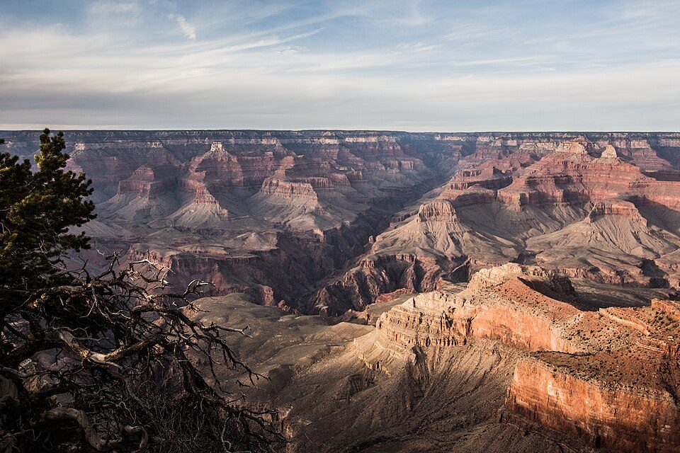

La historia de la Tierra
De una bola de roca fundida a un planeta azul lleno de vida: los 4.540 millones de años de la Tierra, contados en eras.


La Tierra se formó hace unos 4.540 millones de años a partir del polvo y las rocas que giraban alrededor del joven Sol. Los geólogos dividen su historia en eones, eras y periodos, y la leen en las capas de roca y en los fósiles, como si fueran las páginas de un libro. En el Gran Cañón del Colorado, el río ha dejado al descubierto casi 2.000 millones de años de historia en una pared de 1,8 km.
Las grandes etapas
| Etapa | Hace (millones de años) | Qué ocurrió |
|---|---|---|
| Hádico | 4.540 a 4.000 | Planeta de magma; un choque gigante forma la Luna; aparecen los primeros océanos |
| Arcaico | 4.000 a 2.500 | Primeros continentes y primera vida: bacterias y estromatolitos |
| Proterozoico | 2.500 a 539 | Las bacterias llenan de oxígeno la atmósfera; células complejas; la Tierra se congela casi entera |
| Paleozoico | 539 a 252 | Explosión de vida animal; plantas y animales conquistan la tierra; se forma Pangea |
| Mesozoico | 252 a 66 | La era de los dinosaurios; aparecen mamíferos, aves y flores |
| Cenozoico | 66 a hoy | La era de los mamíferos; glaciaciones; aparece el ser humano |
Un infierno sin oxígeno
Al principio la Tierra era una bola de roca fundida bombardeada por asteroides. Uno de esos choques, con un planeta del tamaño de Marte al que llaman Tea, arrancó el material que formó la Luna. Cuando la superficie se enfrió, el vapor de agua se condensó en lluvias que duraron millones de años y llenaron los océanos. La atmósfera era de dióxido de carbono y nitrógeno: no había oxígeno libre.
La gran oxidación
Hace unos 2.400 millones de años, unas bacterias llamadas cianobacterias, que hacían la fotosíntesis, habían liberado tanto oxígeno que la atmósfera cambió para siempre. Fue la Gran Oxidación. Para muchos microbios de entonces el oxígeno era un veneno, y fue quizá la primera gran extinción. Para nosotros, la condición para existir. El hierro de los océanos se oxidó y se depositó en el fondo, formando los grandes yacimientos de hierro que hoy se explotan.
La Tierra bola de nieve
Entre hace 720 y 635 millones de años, la Tierra se congeló probablemente casi por completo, con hielo hasta cerca del ecuador. Se salió de ella gracias a los volcanes, que siguieron expulsando dióxido de carbono hasta calentar el planeta.
La explosión de la vida
Hace unos 539 millones de años, en el Cámbrico, aparecieron en un tiempo geológicamente breve casi todos los grandes grupos de animales: con caparazones, ojos, patas. Los trilobites fueron sus estrellas. Después llegarían los peces, las plantas terrestres, los anfibios, los reptiles y los dinosaurios, interrumpidos por varias grandes extinciones.


La historia en un año
Para hacerse una idea de las proporciones, imagina la historia de la Tierra comprimida en un solo año:
Vídeos para entenderlo mejor
- A Brief History of Geologic TimePBS Eons · 4,8 M visualizaciones · en inglés
Los vídeos son de YouTube y de sus autores. Se cargan solo al pulsar sobre ellos. Ver todos los vídeos →